Notes from Route 02 of Walking New York. This is a walk through the ground where Manhattan first pushed north: from civic corruption at Chambers Street, through Tribeca's surviving early houses, into SoHo's cast-iron canyons and reinvention as an arts district.
For the city's first two centuries Chambers Street was the northern edge of town. Beyond it sat the spring-fed Collect Pond, the city's main source of drinking water, with marshy deltas stretching toward both rivers. The pond was drained and filled by 1811. Its drainage canal survives underground as a sewer—and in the name Canal Street.
Getting there
Start at 52 Chambers Street. Get off at Chambers St (J/Z), which exits under the Municipal Building a block east, or City Hall (R/W) on Broadway. Brooklyn Bridge-City Hall (4/5/6) also works. From LIC take the 7 to Grand Central and change to the 4/5/6 downtown. The walk ends at Mulberry and Prince; nearest exits are Prince St (R/W) or Spring St (6).
Why this walk matters
If you are not from New York, the key idea is that Manhattan did not begin as a wall of skyscrapers. The city started at the island's southern tip and expanded north in layers. This route begins at what was once the edge of town, then follows the land where water, farms, houses, markets, factories, artists, and luxury retail replaced one another.
Tribeca means “Triangle Below Canal Street.” SoHo means “South of Houston Street” (and New Yorkers pronounce Houston HOW-ston). Those catchy names are recent branding for much older places. Canal Street began as actual drainage infrastructure; SoHo was once marshland, then a wealthy suburb, then an industrial district dismissed as a slum.
The grand theme is not simply “old buildings.” It is how New York repeatedly destroys, reuses, forgets, and rediscovers itself. The same growth that created remarkable architecture also buried a Black cemetery, erased a private park, cut a firehouse in half, and nearly replaced all of SoHo with a highway. What survived did so through accident, activism, adaptation, or all three.
Map
Timeline: 400 years in 2.5 miles
The route is short, but its sites span colonial New Amsterdam, the first northward expansion of Manhattan, industrialization, urban renewal, and SoHo's reinvention.
The Dutch colony's African community is present within two years of settlement.
Freed petitioners establish Manhattan's first known free Black settlement, though their children remain enslaved.
The church's farm later contains the Harrison houses and St John's Park.
The cemetery may already have been in use for more than a century.
No. 317 Washington Street, later moved to Harrison Street, is the earliest of the nine survivors.
Aaron Burr and Alexander Hamilton jointly defend Levi Weeks; the actual murder well is now lost.
A private, key-holder park anchors one of Manhattan's most fashionable districts.
No. 2 White Street dates to about 1809; the cathedral's cornerstone is laid that year and it opens in 1815.
Its drainage canal is buried beneath the street that keeps its name.
No. 129 Spring rises in 1817 and No. 139 Greene in 1825, both before commerce remakes the neighborhood.
The marble store at 280 Broadway is one of the country's earliest department stores.
Arnold Constable opens in 1856; Haughwout follows in 1857 with New York's first passenger safety elevator.
A $1 million project balloons beyond $10 million before its accounts are exposed in 1871.
Vanderbilt buys the park; its trees fall and freight trains replace promenades.
The light-filled industrial loft will become Donald Judd's home and studio.
The Wooster Street firehouse opens in 1881; New York Hospital's House of Relief follows in 1894.
Hook & Ladder 8 and Ernest Flagg's Little Singer Building are completed.
Varick Street widening halves the firehouse; the Holland Tunnel opens in 1927 and its exit rotary in 1936.
Haughwout is landmarked in 1965, the highway is dead by 1970, and SoHo becomes a historic district in 1973.
Judd buys 101 Spring; the GAA occupies its firehouse; Richard Haas begins his mural.
Di Modica installs the sculpture outside the Stock Exchange without permission.
Construction reveals the graves in 1991; 419 people are reinterred in 2003 and the site becomes a National Monument in 2006.
The stops
1Tweed Courthouse
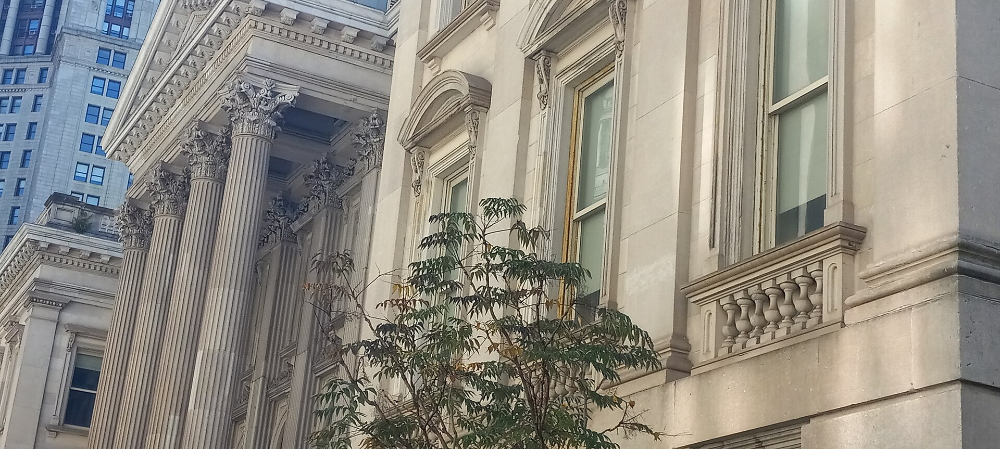
{kind=link}
The marble staircase and Corinthian columns project civic order; the building's unofficial name tells the opposite story. William "Boss" Tweed entered politics in 1850, when Manhattan had grown from fewer than 100,000 people at his birth in 1823 to about half a million. By 1858 he led Tammany Hall, the political machine that treated public construction as a source of private income.
The county courthouse was budgeted at $1 million when work began in 1861. Construction dragged on for 20 years and the cost rose more than tenfold as Tweed's circle submitted inflated bills and invoices from contractors that did not exist. The New York Times obtained the project's itemized expenses and payroll in 1871; Tweed was arrested within days.
His trial took place inside the courthouse that exposed him. Convicted on 204 counts, he later escaped in 1875 and reached Spain, where officials recognized him from Thomas Nast's political cartoons. He was returned to New York and died in jail in 1878.
2African Burial Ground National Monument

Enslaved Africans are documented in the Dutch colony from 1626. In 1644 a group petitioned for freedom and got "half-freedom": their own farm grants north of the pond, but their children stayed enslaved. That makes Tribeca and SoHo the first known free Black settlement on Manhattan. Under the British, Black New Yorkers could not be buried in churchyards, so a burial ground grew here, labeled on a 1755 map. It was buried under 20 feet of fill around 1795 and forgotten until a 1991 excavation for a federal tower turned up hundreds of colonial-era skeletons. 419 were exhumed, studied, and reinterred in 2003 in seven vaults, marked by the seven mounds on site. Perhaps 15,000 more lie under the surrounding buildings.
The excavation preserved details absent from written archives: coins placed in hands or over eyes, a shell beside one person's head, rings, beads, pipes, and a burial in a British marine officer's uniform. Each of the 419 people was reinterred in a hand-carved wooden box. The site became a National Monument in 2006.
3Staple Street Skybridge
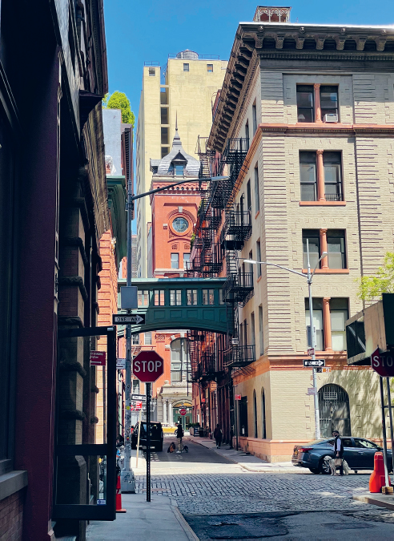
The iron bridge links the third floors of 67 Hudson and 9 Jay. Both belonged to New York Hospital, founded in 1771: a "House of Relief" opened here in 1894 after the main hospital moved uptown, followed by stables and a laundry in 1908. The bridge let staff move directly between the facilities.
Both buildings are now residential. The two bridge-linked apartments went on the market together in 2015 for $50 million, sat for eight years, and sold in 2023 for roughly half the asking price.
4Harrison Street Houses
Nine Federal-style brick houses built 1797 to 1828, sitting under 40-story towers. Six are original to the corner. The other three (including two by John McComb Jr, architect of City Hall) were trucked one block north from Washington Street in 1971 when the area was cleared for the World Trade Center and Independence Plaza. The city sold them gutted in 1976 for $35,000 to $75,000 each. Critics called the restored row a Disneyland facsimile.
The six in place are 29, 31, and 33 Harrison (built together in 1827) and 37, 39, and 41 Harrison around the corner on Washington Walk (1828). The three arrivals became 25, 27A, and 27 Harrison. Two were designed by John McComb Jr., architect of City Hall and Hamilton Grange; one had been his own home.
5Mercantile Exchange
Red brick with granite and cast iron, 1884. Founded in 1872 as the Butter and Cheese Exchange, renamed a decade later as it expanded to groceries, dried fruit, poultry, and canned goods. It sat here because Washington Market, the city's main produce market from 1813 until the 1960s, was a few blocks south.
6Ghostbusters Firehouse
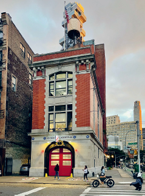
Hook & Ladder 8, completed 1903, was originally 55 feet wide with two bays. Varick Street was widened to 100 feet for the subway starting in 1914 and the western half of the firehouse was demolished. The Italianate details were moved to the new facade, so it is hard to tell anything was cut. Still an active FDNY company.
7No. 2 White Street
Built around 1809 for Gideon Tucker, a school commissioner and assistant alderman. Original window lintels with keystones, original gambrel roof and dormers. When it went up Manhattan had under 100,000 people and this was the northern edge of the built city.
8St John's Square
The Holland Tunnel exit rotary on your left was St John's Park, laid out in 1803 as a key-holder park like Gramercy, with the Hamiltons and Schuylers as neighbors and a Trinity chapel whose steeple was among the tallest structures in the city. Trinity sold the park to Vanderbilt's Hudson River Railroad in 1866. Trees were felled and a freight terminal went up the next year. The chapel was razed in 1918 for the Varick widening, the tunnel opened in 1927, and the terminal came down for the rotary in 1936. Nothing of the park remains.
9Canal Street
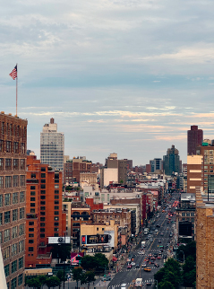
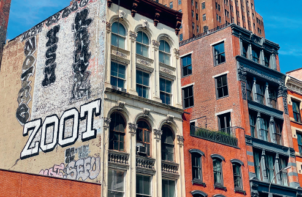
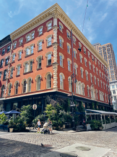
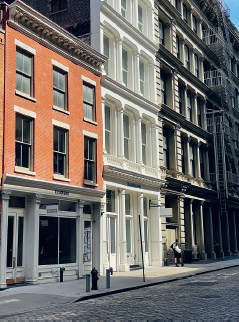
Named for the actual canal dug here around 1800, now a sewer. It is the Tribeca and SoHo boundary. On the north side between Greene and Mercer, Nos. 313 to 327 are eight adjoining houses from the 1810s and 1820s; 321, 323, and 327 keep their peaked roofs and dormers. Samuel Morse lived at 321. Turning up Mercer, the marble and iron block between Canal and Howard is the 1856 Arnold Constable department store.
Canal's jumble is the point: glass hotels, 1870s cast-iron lofts, and little dormered houses from the area's brief life as a wealthy suburb share the same blocks. The street is both a neighborhood boundary—Tribeca below, SoHo above—and lower west Manhattan's major cross-town artery.
10Haughwout Building
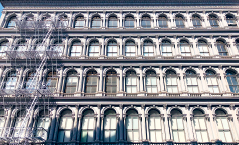
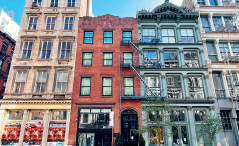
"a very New York thing, not equaled anywhere else"
Landmarks Preservation Commission on the cast iron palaces, quoted in the book
Pronounced HOW-itt. Built 1857 as a glass and china emporium, with the first passenger elevator in New York using Otis safety cables. Mary Todd Lincoln bought White House china here in 1861. Robert Moses wanted a 10-lane elevated Lower Manhattan Expressway along Broome Street through this neighborhood. The Landmarks Commission designated the Haughwout in 1965, calling it the best of the city's cast iron palaces, and it sat directly in the expressway's right of way. The road was scrapped by 1970 and SoHo became a historic district in 1973. The book credits this building with saving the neighborhood.
The fight was part of the wider freeway revolt. Artists had moved into SoHo's cheap, bright lofts while Jane Jacobs and other residents fought a road designed to connect the Holland Tunnel with the Manhattan and Williamsburg Bridges. Landmarking 488–492 Broadway put a protected building directly in the proposed roadway.
11Arturo Di Modica Studio, 54 Crosby
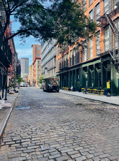
Di Modica bought this vacant lot in 1978 and built the studio by hand. On December 15, 1989 he trucked a 3.5-ton bronze bull from here to the Stock Exchange and left it under the Christmas tree overnight with no permit. Police hauled it to a Queens warehouse the same day. It has been at Bowling Green ever since. He sold the building in 2004 and died in Sicily in 2021.
The 18-foot bull took two years to sculpt and forge. Di Modica framed it as a statement of American resilience after the 1987 crash. It was not his first unsanctioned installation: he had previously left large sculptures at Rockefeller Center and Lincoln Center. The Crosby Street studio is the quieter surviving artifact of that practice.
12Judd Foundation, 101 Spring Street
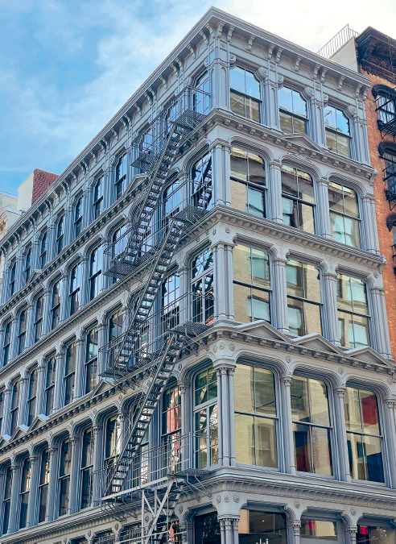
An 1871 cast iron loft with so much glass the facade reads as more window than metal. A 1962 City Club study called this whole district a "true wasteland" and the plan was to level it. Industry left, artists moved into the cheap lofts, gallerists followed from Madison Avenue, and by 1970 the area was rebranded SoHo from the planning department's South Houston Industrial District. Donald Judd bought this building in 1968. The foundation opened it to the public in 2013 with his works installed as he left them. Tours only, closed Sunday and Monday.
Judd used the vast loft floors to make and install work at a scale conventional studios could not support. He later founded the Chinati Foundation on a 340-acre former military base in Marfa, Texas. His New York foundation preserves not only individual objects but the relationship between the work and the rooms where he placed it.
13No. 129 Spring Street
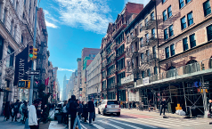
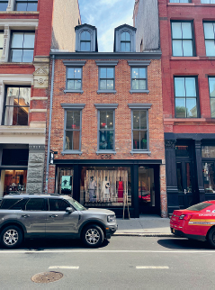
An 1817 Flemish-bond brick house, one of the oldest in SoHo, now a COS store. In the basement is a round brick structure sold as the well where Elma Sands was found murdered in January 1800. Her fiance Levi Weeks was acquitted with Alexander Hamilton, Aaron Burr, and Brockholst Livingston as his defense team. The book's verdict: the structure is almost certainly an 1817 cistern, and the real well stood a bit north on the west side of Greene Street and is lost. The confusion dates to a 1974 ghost claim and a 1980 basement discovery that got merged in the press.
Sands disappeared on December 21, 1799 and was found on January 2 in a recently dug Manhattan Company well. Weeks went on trial that March. His prominent defense team won an acquittal; four years later Burr killed Hamilton in their Weehawken duel. The Manhattan Company soon pivoted from water supply to banking and eventually became part of JPMorgan Chase.
14Gay Activists Alliance Firehouse, 99 Wooster
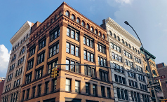
An 1881 firehouse by Napoleon LeBrun, leased by the GAA in April 1971 as headquarters until 1974. Meetings, screenings, and dances made it a hub of post-Stonewall activism, and more than a dozen later groups including ACT UP trace back to it. Arson destroyed half the interior in October 1974. It is unclear whether that was a homophobic attack or internal factionalism. The GAA disbanded in 1981.
Formed six months after Stonewall, the GAA used demonstrations, sit-ins, marches, and press attention to push for basic rights and dignity. Taking the entire small firehouse gave the group an independent home rather than a room inside someone else's building. Its committees and gatherings seeded more than a dozen later organizations.
15No. 139 Greene Street
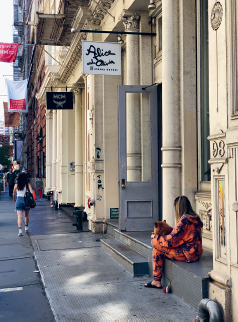
Built 1825 for merchant-tailor Anthony Arnoux. By 1862 it was a brothel, one of more than a dozen on this block. An 1870 guide counted 41 barrooms and 8 houses of assignation on the six blocks between Canal and Bleecker. Peter Ballantine, a fabricator for Donald Judd, bought it in 1973 to restore as his home. Fifty years later the work is still going. On the way, the north side of Houston (Silver Towers, NYU's Paulson Center) shows what the rest of SoHo would have looked like if the renewal plans had gone through.
Greene Street's brothels followed the Broadway hotels and theaters that supplied their customers. As entertainment moved toward Madison Square in the 1890s, the trade followed and most surviving houses here gave way to larger lofts. No. 139 survived, though storefront windows and a freight dock badly altered it before Ballantine began his long restoration.
16Richard Haas Mural, 112 Prince
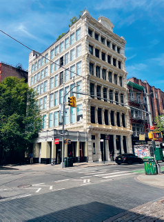
A trompe l'oeil painting begun in 1974 that continues the building's cast iron facade around onto the blank east wall. It was badly decayed by the 2010s and restored in 2023, with a dog and two cats belonging to current residents added.
17Little Singer Building, 88 Prince
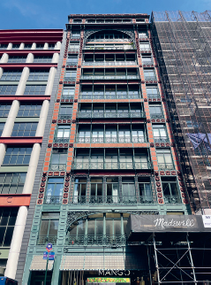
Ernest Flagg, 1903, for the Singer sewing machine company. Painted iron tracery, huge windows, red terracotta tile, and false Ionic columns rendered as iron bars at the third floor. The building is L-shaped and the same facade appears again at 561 to 563 Broadway. Flagg's other Singer building downtown grew a 674-foot tower in 1908, the tallest on earth for a year, demolished in the 1960s.
18St Patrick's Old Cathedral
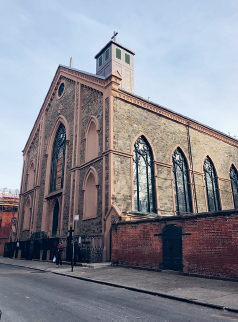
Cornerstone 1809, completed 1815, the city's first cathedral, built on a burial ground St Peter's bought in 1801. The brick wall around the grounds went up in 1834 during anti-Catholic violence. A fire in 1866 destroyed the interior; the stone walls survived and it was rededicated within two years. The 5th Avenue St Patrick's replaced it as the seat in 1879. Look through the peepholes in the graveyard doors. In late August and September there are usually sheep grazing the yard.
The cathedral reflects the rapid growth of Catholic New York: fewer than 1,000 Catholics lived in the city after the Revolution, more than 10,000 by 1806, and roughly 400,000 by 1860. Irish migration after the 1798 Rebellion and during the Great Famine transformed the congregation and the city around it.
Embers from a Crosby Street fire ignited the wooden roof in 1866. The roof and plaster ceiling collapsed into the church, but the stone shell held. Even before the fire, work had begun on the much larger Fifth Avenue cathedral, whose cornerstone was laid in 1858.
After
The book's food list from here: Albanese butcher (238 Elizabeth), Golden Steamer pork buns (143A Mott or 210 Grand), Piemonte ravioli (190 Grand), DiPalo's cheese (200 Grand), E Rossi & Co. souvenirs (193 Grand), Spongie's sponge cake (121 Baxter), or a Wah Fung pork plate (9 Chrystie, expect a line). For dumplings: Jin Mei (25B Henry), Super Taste (26 Eldridge), North Dumpling (27A Essex), or King Dumplings (74 Hester).